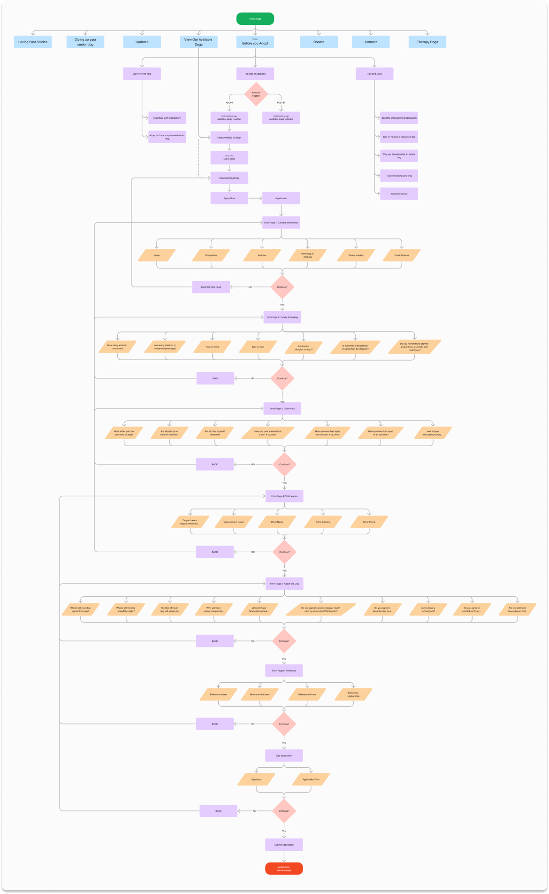

Laura Jacobson
Project overview: Redesigned a senior dog adoption website adoption flow for The Sanctuary for Senior Dogs.
ROLE/TEAM
TOOLS
DURATION
Worked as a User Experience Designer for a group student project completed while in a UX design program.
Figma
June 2024-July 2024
The Problem Statement
The Sanctuary for Senior Dogs website is being designed to help busy, working prospective dog owners adopt senior dogs. We have observed that many non-profit pet adoption websites are hard to navigate and are lacking up-to-date information which can make the adoption process more difficult. How might we build The Sanctuary for Senior Dogs website so that our busy, working prospective pet owners are successful based on an increase in senior pet adoptions.

Research & Analysis
We interviewed a total of 5 users within our key demographic as well as the owner of The Sanctuary for Senior Dogs. We prepared for our interview by crafting 10 open-ended questions to allow our participants to answer freely.
We synthesized our data into an Affinity Diagram to help us categorize our participant’s responses, which you can see a part of in the first figure below.
We then created an Empathy Map to help us gain a better understand of who our user was and what their needs were before we went further into the design process.
Results
User Findings
Deborah Workman: Executive/ Co-Founder
- Easy to find adoption process.
- Friendly and approachable website and shelter.
- Seamless adoption process from start to finish.
- Finding foster homes is just as important as adoption homes.
- Applicants are of all ages.
- Donors are mainly older.
- Senior dogs still have a lot of value and a lot of love to give.
User Persona
We used our user research to create a user persona that represented our key user demographic.
User Flow
We began with a high-level story board before working out a more detailed user flow of the adoption process through the website using a form.

Concepts, Sketching, Wireframes
We did our initial sketches of the adoption process with the user’s needs in mind, hoping to incorporate an easy workflow through finding and applying for a dog as well as donating to the shelter to help the shelter continue providing their services.
We then took those concepts to create our mid-fidelity wireframes and prototypes and began user testing.

Test: Validation, Usability, Feedback
We completed testing of our mid-fidelity prototype with 6 users.
Main Findings:
- We needed a way to confirm or back out of canceling the application process.
- The users wished the application confirmation was more pleasing.
- One of our users had larger hands and the touch targets for some of the buttons was too small.
Visual Design & Prototype
The next plan of action was to create color palettes and typography that would help communicate the brand’s identity and also give the product an exciting feel. We wanted to choose colors that bring feelings of joy and happiness to the user.

Prototype
We finalized a high-fidelity prototype which incorporated our branding as well as the feedback from our user testing to create a polished design.
View our prototype here.